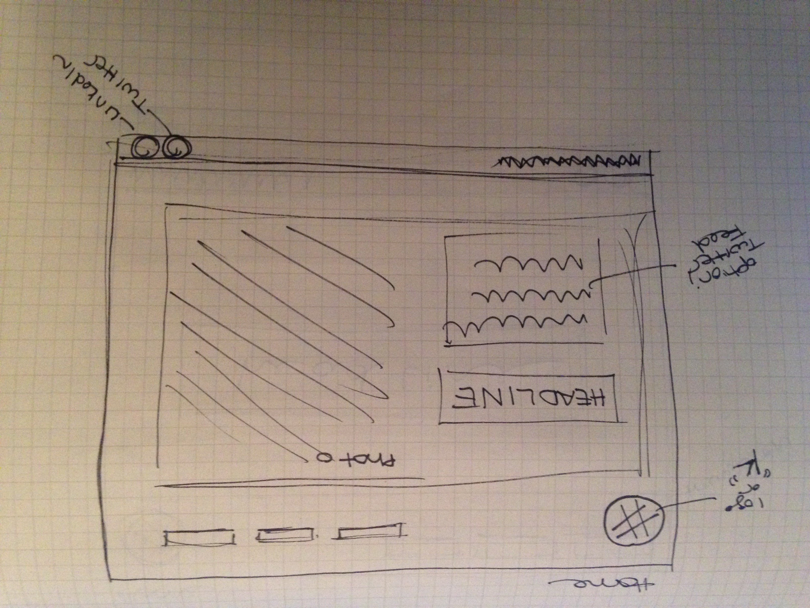
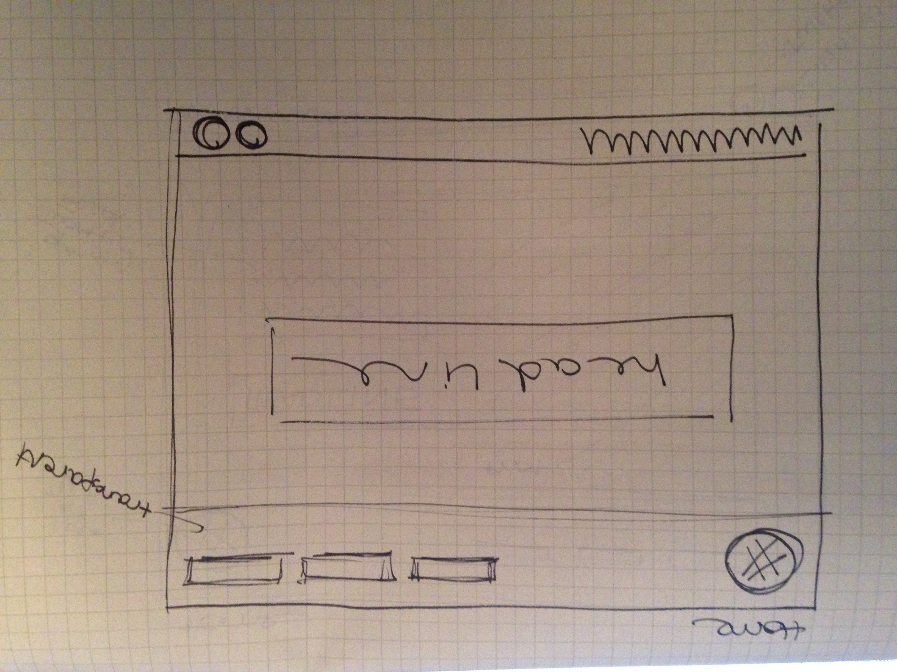
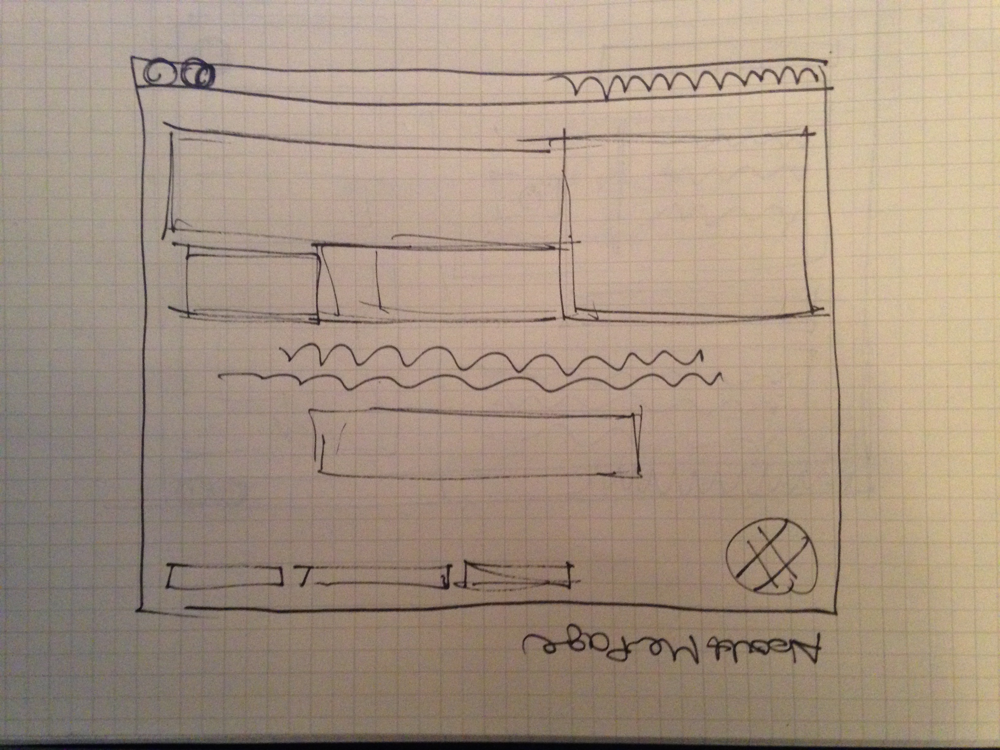

I choose Lunet Eyewear and Humann as the two websites that I am inspired by.
How do they exhibit effective use of space, size or balance?
Lunet Eyewear: The logo in the upper left corner is well balanced with the menu options right aligned at the top of the page. The placement of the logo is pretty standard, and intuitive, and a good anchor for the different pages on the site. The headline and the call to action button are in the negative space of the photograph, and the person wearing the eyewear is the focal point of the site. Site is organized in two columns.
Humaan: I like the way the logo again is in the upper left, and well balanced with the menu options right aligned at the top. The headline is centered, and balanced by four color work samples at the bottom of the home page (4 column organization). “Digital World” is italicized in the headline, making it a bit of a focal point. The different pages on the site continue to use vertical columns to divide the page. Sections of 2 or 4 columns allow the space to be divided into quarters-- the bigger the section the more emphasis (ex. the blog page is ¾ content, ¼ sidebar).
What makes them similar and different?
Both of these pages are flat design. I like the simple menu options at the top and the use of a limited color pallet (5 colors or less) and photography. Both pages have a headline and a call to action button. I prefer the shorter headline and the button in white space, not over the photo. I like the even number of columns used as the foundation for each site, with the headline taking the whole page as the exception.
Thumbnail Sketches
Home Page One.

By dividing the page into 2 columns, and anchoring the top and bottom with a header and footer, the headline becomes the focus point.
Home Page Two.
This home page sketch does not use a photo and uses the entire negative space between the header and footer for the headline. Removing the text box that functioned as a Twitter feed in the home page one sketch makes the focus point even stronger.

About Me Page.
By dividing the page into three columns and centering the headline and subtitle, the page is balanced. The headline is the focus point.

Blog Page.
By using two-thirds of the page for the blog posts, they become the focus point. Dividing the content of blog posts